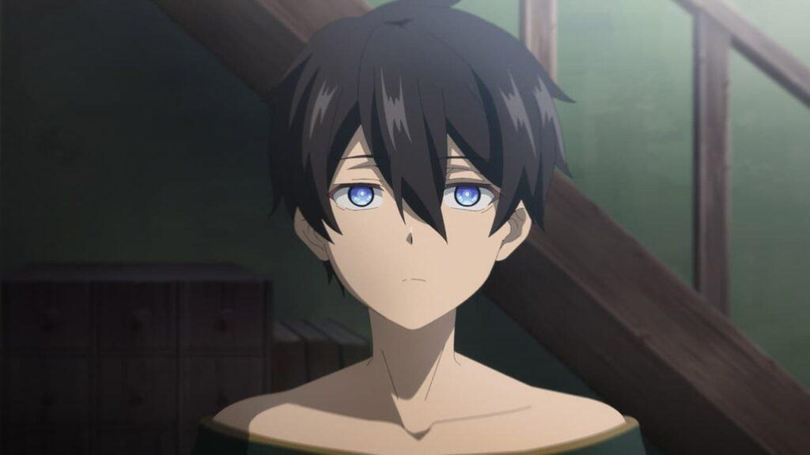
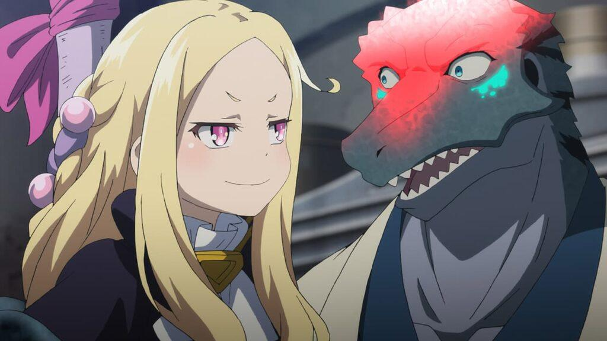
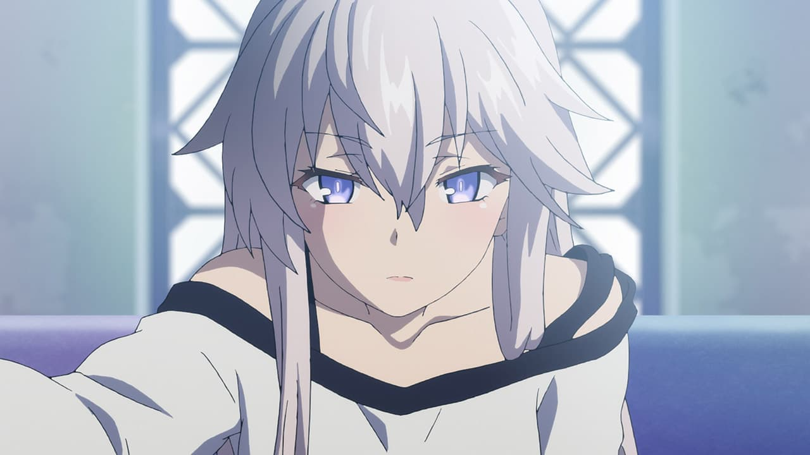
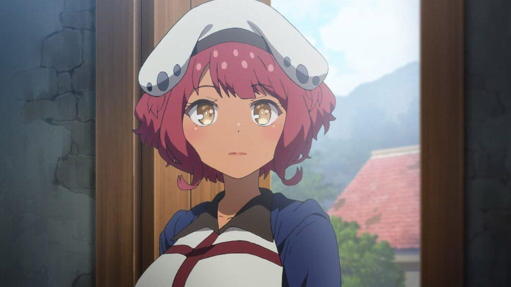
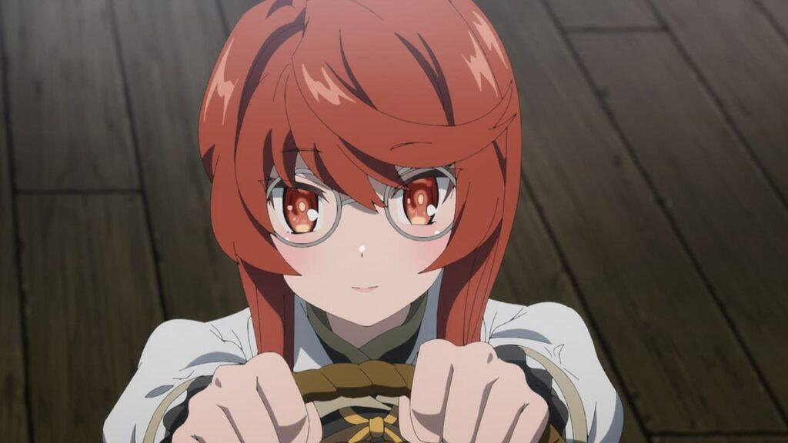
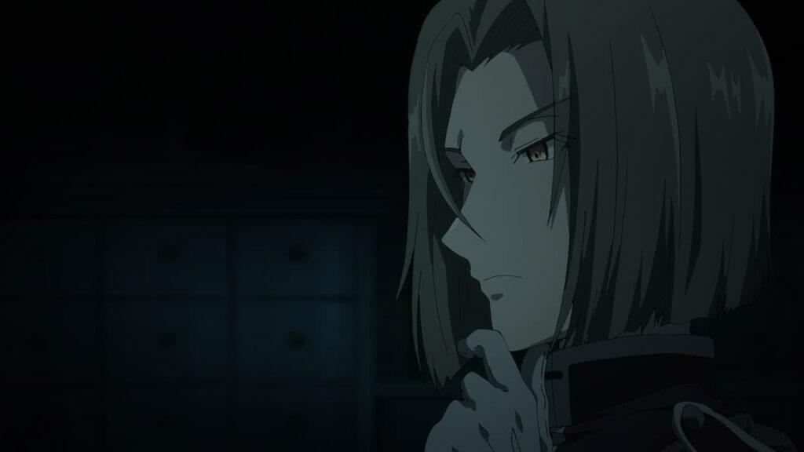

Reseña | Mahoutsukai Reimeiki — Capítulo 9
Luego de una inspección fallida del capítulo anterior, Holdem abandona la aldea, no sin antes despedirse de su antigua conocida, Loux. Mientras tanto, Saybil y Holt hablan entre sí, para luego el chico decir que ha recuperado la memoria. Eso sorprende a Holt, pero lo que más le causa impresión es que Saybil comienza a hablar de amor. “Creo que la profesora Lo me gusta.”
Por su parte, Loux logra escuchar accidentalmente la conversación de sus estudiantes cuando regresaba de despedir al sirviente lobo. Es un una situación delicada, por lo que decide fingir que no escuchó nada, sin embargo, Holt la busca y se lo dice sin más. La chica de cuernos tiene miedo a que la situación termine con su maestra abandonándolos.
Mientras tanto, debido a que Saybil comienza a tener miedo de matar a alguien al transferir su magia, va a visitar a Zero. En la tienda de la “Bruja de la Oscuridad Fangosa”, esta le revela al chico la identidad de su padre, así como la razón de su existencia. Saybil toma las revelaciones con mucha tranquilidad, y termina pidiendo a su tía que lo entrene en la transferencia de magia.
Sin embargo, un grito sacude a todos los habitantes de la aldea. El chico que Loux rescató se recuperó, pero intentó asesinar a Kudo cuando lo vio. El joven, ahora prisionero, es el responsable de plantar el “Resto de la Calamidad” que casi causa la muerte de Laios. Los adultos que protegen la aldea llega a la conclusión de que un grupo poderoso está detrás de todo, por lo que se preparan para el siguiente golpe.
Los problemas sacuden la aldea de las brujas, tanto personales como generales. Un grupo aparentemente apoyado por un alto rango de la iglesia ha comenzado a moverse para destruir lo que Albus intenta construir: Convivencia entre magos y personas de a pie. Además, cada uno de los estudiantes de la clase especial se enfrentan a sus propios demonios.
En lo personal creo que el capítulo 9 de Mahoutsukai Reimeiki ha sido de los mejores de la serie. No solo vemos a Saybil conocer su pasado y darse cuenta que ya no está vació, sino que vemos al pasado de Holt atormentándola. ¿Será capaz la joven de confiar en Tirano? Los hijos que se fueron hilando desde el episodio 1 han comenzado a tejerse.
Por fin, el capítulo 9 de Mahoutsukai Reimeiki nos da el momento que todos estábamos esperando: Zero le ha revelado su pasado a Saybil. La situación de vida o muerte que el joven vivió el episodio pasado, desenterró los recuerdos más dolorosos en un intento de supervivencia. Saybil ya no es indiferente a morir.
Por esta razón, Zero ha deciuuudido contarle todo su pasado. Repasemos lo revelado. Primero, al parecer, Saybil forma parte del plan de Trece para crear un mundo para Zero. De alguna forma previó que si procreaba un hijo con una determinada mujer, este nacería con magia infinita. No obstante, la mujer, la madre de Saybil, lo descubrió y huyó de Trece.
Si eso es verdad, quiere decir que Trece también previó que pronto Zero sufriría de falta de magia. Aunque supongo que es un destino que todas las brujas comparten. Aunque, sin comparamos a Zero con la abuela de Albus, parece que el padecimiento le llegó a la albina demasiado temprano. ¿Habrá alguna razón de peso, o solo el inevitable azar?
Sea como sea, ahora entendemos la razón por la cual Zero no quiere usar a su sobrino para curar su escasez de magia. Saybil, para su lógico padre, es solo una batería para su querida hermana menor. Si Zero tomara aunque sea un poco de la magia de Saybil para ella, sentiría que les estaría robando la humanidad. Entonces solo sería una herramienta, tal y como lo veía Trece.
El amor está en el aire en el capítulo 9 Mahoutsukai Reimeiki. Saybil, por alguna razón extraña ha comenzado a preocuparse de su vida amorosa. Quizás la situación en la que casi muere le dio el empujón para intentar entender los sentimientos que le profesa Holt. Para infortunio de la joven, sus intentos para explicarle al joven la cuestión, termina solo con su corazón hecho pedazos.
“Creo que la profesora Lo me gusta.” Esas son las palabras que tanto Holt como Loux escucharon salir de Saybil. La profesora está preocupada por los sentimientos de su querido alumno, y quizás un poco nerviosa también. Recordemos que alguna vez dijo que el amor ya no le era necesario por su larga vida. ¿Será verdad, o solo que nunca encontró a su Saybil en el pasado?
Sea como sea, parece que ahí hay un triángulo amoroso entre Holt, Loux y Saybil. Aunque debemos tener en cuenta que el chico apenas ha comenzado a entender sus sentimientos, por lo que no hay nada seguro. Lo que sí hay seguro es que, elija a quien elija, alguien terminará con el corazón roto. ¿Holt o Loux? ¿O ambas? Tengo una teoría.
Sabemos que la vida de Saybil podría ser muy larga, si se entrena los suficiente. Bien podría elegir en estos momentos a Holt, y vivir décadas felices con ella. Inevitablemente Holt dejaría este mundo, y un Saybil maduro y más sabio se reencontraría “accidentalmente” con su querida maestra, quien lo acompañaría por siglos. ¿Qué opinan?
Qué hermosa frase ha soltado la bella Heartful. Una frese que quizás hubiera repudiado durante mi adolescencia —quizás porque no la entendería del todo. En el capítulo 9 de Mahoutsukai Reimeiki, también nos muestra como Tirano ha comenzado a adaptarse a la aldea. Se puede notar que es un hombre práctico, y hará el trabajo por el que lo contraten.
Pero, pudimos ver un poco más de su personalidad, y creo que no es una mala persona. Sí, no tiene escrúpulos y parece disfrutar matar a todos, pero no es a eso a lo que me refiero. Como pudimos observar en sus interacciones con los demás, ha cumplido con su parte del trato, pero jamás deja pasar la oportunidad para hacer o decir algo que incomode a los demás. ¿Por qué?
Quizás sea porque quiere evitar acercarse demasiado a la personas. No quiere forma un vínculo fuerte con nadie, quizás por miedo o por otra cosa, e intenta alejarlos al infligirles miedo. Sin embargo, ni Heartful ni los niños de la aldea parecen temerle. Su escudo ya no le servirá aquí, ¿quizás esta aldea sea la que haga que el tirano se arrepienta de sus pecados?
Quizás esta sea la aldea donde pertenece, y no lo juzgarán por su acciones pasadas. Sin embargo queda un obstáculo que tendrá que pasar primero, y es Holt y el pasado que tiene con ella. El capítulo 9 de Mahoutsukai Reimeiki nos ha recordado que Holt ya perdió a una amiga de la infancia a manos de Tirano. ¿Será capaz de superarlo? O bien, ¿en verdad Tirano mató a su amiga?
Vaya, creo me emocioné un poco más de la cuenta al escribir esta reseña. Pero no sean tan críticos, fue un buen episodio donde pasaron muchas cosas que valía la pena comentar. Y eso que dejé varias fuera para evitar que esta reseña se convirtiera en un largo ensayo. Si creen que haya algo importante que omití del capítulo 9 de Mahoutsukai Reimeiki, siéntanse libres de comentarlo.
Pero vaya que disfruté bastante el episodio. Amé las tonterías de Holt —y su sublime bloqueo que evitó que Padre la golpeara—, así como al nuevo personaje que presentaron. Siempre es bienvenida una waifu pelirroja y chaparrita con lentes, y una lengua afilada. No cabe duda que será la que terminará evangelizado a Tirano, y quizás le robará el corazón también. Ya saben, fue un episodio donde se respiró el amor.
Ya para culminar, debo disculparme por mi irregularidad de las últimas semanas al publicar las reseñas (¿Se puede renunciar de ser adulto? ¡Teehee!). Espero que nada me impida terminar de reseñar este gran anime en tiempo y forma. En fin, ahora lectores, les pregunto, ¿qué les ha parecido el capítulo 9 de Mahoutsukai Reimeiki?s